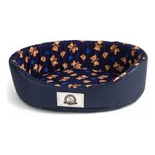
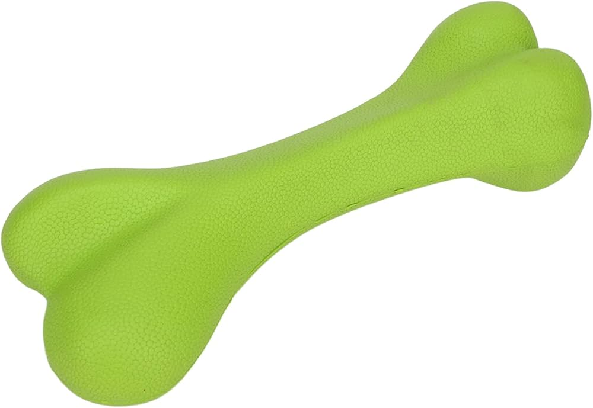
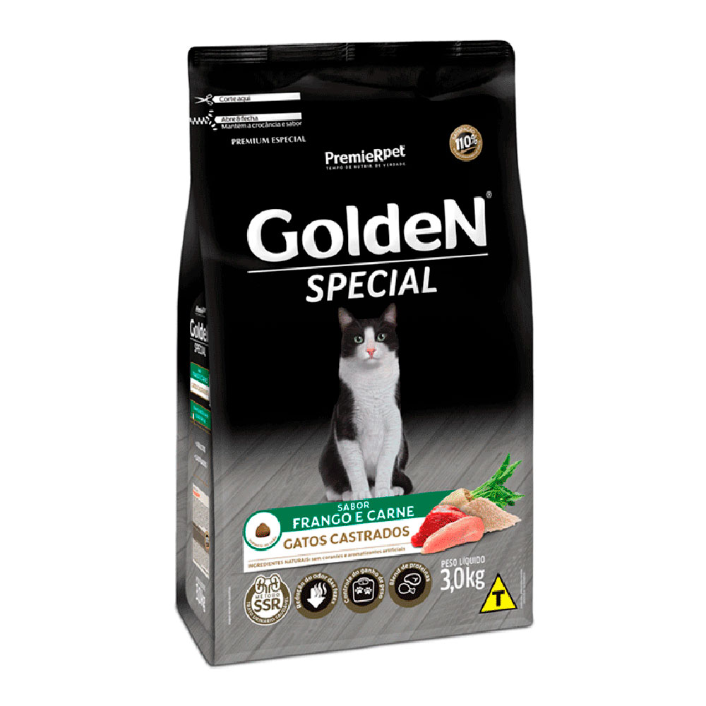
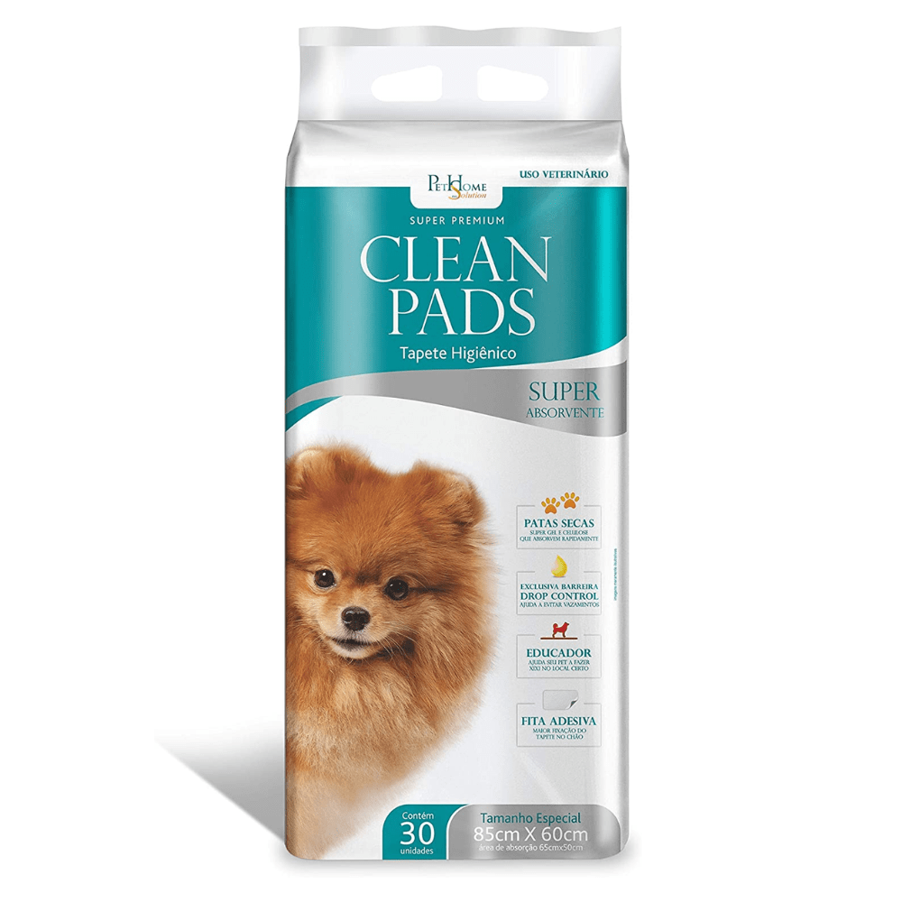
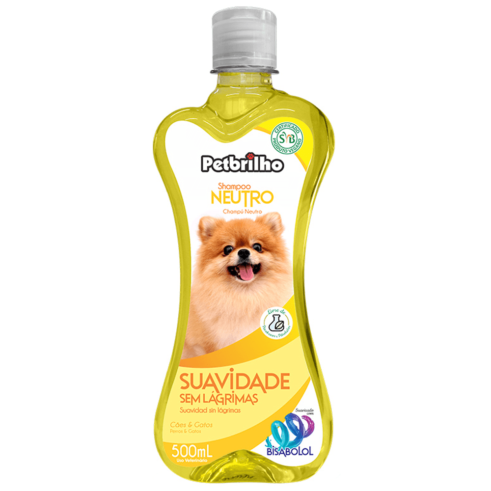

Nossos Produtos
1. Acessórios (Roupas, Brinquedos, Camas)

Produto: Caminha Nuvem Super Macia
Descrição: Caminha redonda, confortável e lavável para cães e gatos de pequeno porte.
Valor: R$ 120,00

Produto: Brinquedo Mordedor de Osso
Descrição: Brinquedo de borracha resistente para cães, ajuda na limpeza dos dentes.
Valor: R$ 35,00
2. Rações Não Perecíveis

Produto: Ração Premium Cães Adultos Sabor Carne (15kg)
Descrição: Ração seca não perecível, rica em vitaminas e minerais para cães adultos.
Valor: R$ 180,00

Produto: Ração Super Premium Gatos Castrados (3kg)
Descrição: Ração seca não perecível específica para controle de peso de gatos castrados.
Valor: R$ 85,00
3. Produtos de Higiene e Limpeza

Produto: Tapete Higiênico Super Absorvente (30 unidades)
Descrição: Tapetes com fita adesiva e atrativo canino para treinamento de filhotes e adultos.
Valor: R$ 60,00

Produto: Shampoo Neutro Pelo Brilhante (500ml)
Descrição: Shampoo suave para banho em casa, não agride os olhos do seu pet.
Valor: R$ 25,00
Nossos Serviços
Banho e Tosa
Descrição: Serviço completo com banho morno, shampoo premium, corte de unhas, limpeza de ouvidos e tosa (padrão da raça ou higiênica).
- Valor (SEM Tele-busca - você traz o pet): R$ 70,00
- Valor (COM Tele-busca - nós buscamos em casa): R$ 90,00